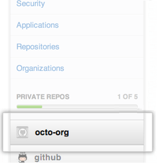

You can downgrade or delete your paid account at any time, no questions asked.
GitHub provides two types of paid accounts: personal accounts and organizations. You'll need to determine which account you want to cancel. For example, if you have a GitHub account for work, you probably want to cancel the organization, not your personal user account.
Tip: You must be an owner of the organization to be able to downgrade or delete the account.
To determine which accounts you have access to:
- On the left side of the page, you'll see a menu bar with your personal account, as well as any organizations you're associated with. 
- Once you've found the account you want to change, click Billing.
To downgrade or to delete?
To cancel your paid account, you have two options. You can either:
- Downgrade to the free plan, and retain your public repositories and their contents; or
- Delete your account entirely, and all its contents
The process for this is different depending on whether you have a personal account or an organization.
User accounts
To downgrade your user to the free plan, see "Downgrading a user account to free."
If you would rather delete your user account, including all its repos, issues, wikis, pages, and private forks, see Deleting your user account
Organizations
To downgrade an organization to the free plan, see "Downgrading an organization account to free."
If you would rather delete the organization, including all its repos, issues, wikis, pages, and private forks, see Deleting an organization